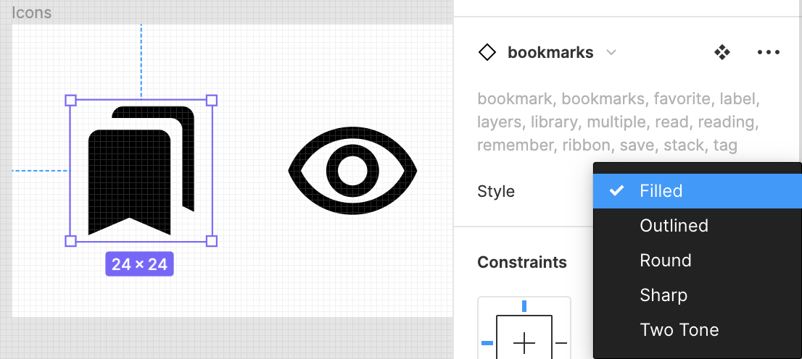
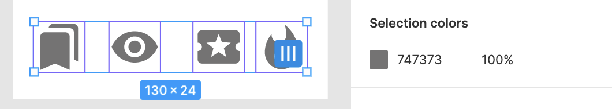
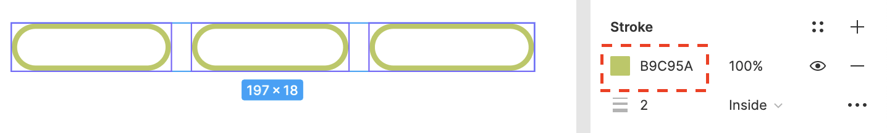
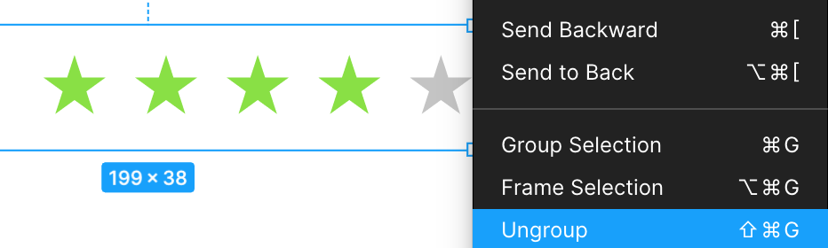

5 Reusable Elements & Data¶
In the last chapter, you created wireframes for the app and established a well-thought-out scaffold. These are essential steps in designing a product. Having set a general direction for your team, you’ll now start working on the finer details by fleshing out the screens with real data.
Among the more useful features in Figma are components, which you briefly touched upon in the last chapter. Even without going into detail, having an overview of components helped speed up the iteration.
In this chapter, you’ll take a closer look at components and how you can leverage them to create flexible designs. More importantly, you’ll learn the value of reusability when building designs — this chapter focuses specifically on building reusable components. You’ll also learn how to better organize your components and their variations.
Visualizing When to Use Components¶
A common question when you start using components is: Which pieces of my screen would benefit from being a reusable component? Frankly, it’s not a straightforward question to answer.
A lot of this boils down to the idea behind the product and its complexity. The more information your app surfaces, the more elements it has on the screen. But that’s not all. If there are variations in how you surface similar information, you’ll end up with more unique elements on your screen.
You might’ve noticed this with the app teardown exercises. Airbnb used just two components to build the entire screen, whereas Pocket Casts used multiple design variations to surface the same information. In both these apps, their underlying information was similar, but how they surfaced it varied.
So, how do you decide on the component breakdown? A neat trick is to visualize the silhouette of the app. You did this in the teardown exercise. After tracing each screen, you hid the screenshot to view the app structure. Hiding the specific information helped you analyze how many components the screen uses.
Once you’ve built a wireframe of a screen, it’s easier to notice these details. In the future, any time you use an element in more than one place with slight or no variations, you can extract it as a component.
Getting Started¶
From the project files for this chapter, load chapter-5-starter.fig into Figma. You can drag the file into the Figma window to import it.
Open the imported project. The file contains the movie list and movie details wireframes along with the wireframe components.
Building the Movie List Item¶
Add a new Macbook frame (F) to the file. Name this frame Posters.
Add a movie-list-item component to this frame by copying the movie-list-item component from the wireframe-components frame. Select the instance, right-click and select Detach instance or press Option-Command-B/Alt-Control-B.
Once you detach an instance from the main component, it stops behaving like an instance that can receive style updates from the main component and starts acting like a regular group. You’ll also notice the icon is no longer a diamond and the outline goes from purple to blue.
Expand the movie-list-item group, select the movie-image, genre and rating instances, and detach them from their instance by pressing Option-Command-B/Alt-Control-B.
Here’s how your Layers panel should look at this point:
Expand the movie-image layer, and delete the diagonal lines. Select the rectangle and remove the black stroke.
Next, select the movie-image frame and give it an Image fill.
The downloaded files come with a movie-images folder containing posters. Navigate to the folder and select the birds-of-prey poster.
To finish, give the movie-image frame a corner radius of 4.
Customizing the Text and Fill Color¶
Next, you’ll change the movie name to Birds of Prey and the weight to bold.
Now, select the individual genre items and give them a corner radius of 12.
Change the fill of the genre items to #DBDCB3.
Next, from the rating group, select the first four stars and change their fill to #B3C63F.
Great job! The list item is coming together nicely. For your final touch, select the containerlayer and remove its stroke. Give it a white fill and a drop shadow with X and Y values of 0, a Blur of 2, Spread of 1 and 25% opacity.

Your movie list item should look like this:
The list item you just created looks excellent, but it lacks the wow factor. One of the most compelling things about movies is how bold and expressive their posters are. These posters subconsciously create an association with the film.
Think about “Toy Story”, and surely you picture Woody and the gang. Think about “Up”, and the first thing that comes to mind is Mr. Fredricksen and his house, floating away. Imagery is critical in building an association with the brand.
Your goal in the next iteration is to amplify the movie posters.
Iterating on the Movie List Item¶
Add a rectangle (R) to the Posters frame measuring 414 × 263. Click the Fill option on the Properties panel and select Image.
From the movie-images folder, pick birds-of-prey. Now, click the Fill options, select Crop to adjust the part of the poster that will be visible in the rectangle, and name this layer movie-image.
Add another rectangle (R) measuring 414 × 263 on top of the movie image, and align it horizontally and vertically. Give this layer a Linear Gradient fill.
Use a black color with an opacity of 8% for the left handle, and a color of #111111 and an opacity of 100% for the right handle. Call this layer backdrop-gradient. This layer will make the text more readable.
Group the two layers by pressing Command-G/Control-G, and call it Poster/Birds of Prey. Duplicate the group six times. You’ll need to resize your frame to house all six instances.
Change the movie image for each instance, and follow the Poster/Movie Name naming convention. You’ll come back to this naming convention shortly.
Make each group a component by selecting the group, right-clicking, and selecting the Create Component option or pressing Option-Command-K/Control-Alt-K.

Before moving forward, it’s time to do some housekeeping and tidy up your workspace.
Organizing With Pages¶
If you keep creating multiple component frames on the same canvas, your workspace will eventually become cluttered and difficult to navigate. It’s good practice to continuously tidy up and organize your workspace. As the Boy Scouts say, “Leave the campground cleaner than you found it.”
To do so, you’ll use a handy feature in Figma called pages. Pages allow you to add a layer of hierarchy in your design files by separating things into their own spaces.
Setting up Your Pages¶
On the Layers panel, click + to add a new page and call it Components.

If you can’t find the + button, collapse the Pages section by clicking the drop-down option, as shown below:
Go back to Page 1 and rename it Cinematic App. Select the wireframe-components and the Posters frame on this canvas, cut them by pressing Command-X/Control-X, and paste them into the Components page by pressing Command-V/Control-V.
Add another page and call it Wireframes. Cut the movie-list-wireframe and movie-details-wireframe from Cinematic App, and paste them to Wireframes.
You now have three different pages to organize your designs and their related components and iterations. Keeping components, wireframes and the actual designs in separate pages makes your working design canvas tidier.
Next, add another Macbook frame (F) to your Components page and name it Movie Card. Add the Birds of Prey poster component to this frame. Now, add a text layer (T) to this frame with the text Birds of Prey. Use the font Roboto-Bold, font size 24 and text color white. Place it at a margin of 79 from the top and 16 from the left. Name this layer title.
Copy the movie-info layer from the movie-details-wireframe in the Wireframe page, and paste it below the title layer. Change the font color of the director, duration and year text to white.
Place the movie-info layer at a margin of 16 from the top and left, aligning its left edge to the title.
Reusing and Restyling Components¶
You’ll now create the genre component. Instead of making it from scratch, you’ll reuse the wireframe’s genres component and style it.
Create a new frame (F) measuring 250 × 50. Name this frame Genre and, in the Fill section, change the fill to gray.
Now, click the Assets section in the Layers panel to view all the available components.
In the newly created Genre frame, add the genres component. Select the added instance, right-click and choose the Detach Instance option or press Option-Command-B/Alt-Control-B.
Expand the genres’ Auto Layout frame and hold Shift while selecting the three genre groups to select them all at once.
Apply a corner radius of 10, remove the fill, and add a white stroke of thickness 2.

Now, select the three text layers within each genre, give them a white fill and a letter spacing of 1, then change the weight to bold. From the Text properties, click the Type Details option represented by three dots. Under the Letter Case option, select Uppercase.
Select the genres’ Auto Layout frame, right-click, and make it a component by selecting the Create Component option or pressing Option-Command-K/Control-Alt-K.
Add the newly created genres component to the movie card and place it at a margin of 32from the bottom and 16 from the left of movie-info.
Creating the Rating Component¶
Moving along, it’s time to build the rating component. Add a new frame (F) measuring 250 × 50to the canvas, give it a black fill, and name it Rating.
The black fill makes the rating text visible and helps differentiate between components in the Assets section. Adding separate frames in the canvas for building each component, as you’ve done so far, also helps consolidate the elements and their related changes into their own section, keeping the Layers panel clean.
Add the rating component you created for the wireframe to this frame and detach it from the instance by pressing Option-Command-B/Alt-Control-B. Change the fill color of the first four stars to #89E045, and rename the layer stars.
Add a text layer (T) to the frame with the text 4.2 and place it at a margin of 16 from the left. Use the font Roboto-Black with a font size of 32 and a letter spacing of 1. Align it vertically with the stars, separate them by 18 points horizontally, and group the two, calling it rating.
Finally, make this group a component by pressing Option-Command-K/Alt-Control-K.
Add the newly created rating component to the movie card and place it below the genreslayer at a margin of 16 from the bottom of genres and 16 from the left. Group the poster, title, movie-info, genres and rating, and call this group movie card.
Now, make the movie card group a component by pressing Option-Command-K/Alt-Control-K. You can also select the group, right-click, and click the Create Component option.
Excellent job with your first fully fleshed-out component! Compared to the original version, it’s much more appealing and vibrant. Adding the full-width images gives the design more personality.
Placing the New Component in a Screen¶
It’s now time to use this component in a screen. Go to the Cinematic App page, add a new iPhone 11 Pro Max frame (F) to this page and increase its height to 1578. Call the frame movie-list.
Add a movie card component to the movie-list frame. To fill the list, duplicate the movie card component six times, then, with all six cards selected, add a vertical Auto Layout by pressing Shift-A.
Make sure the vertical Auto Layout has no padding or spacing, as shown below.
Now, it’s time for some fun! All items in the list represent one movie, “Birds of Prey”. You want to showcase multiple movies instead of the same one over and over. To do so, you’ll use the instance swapping ability of components.
Expand the second instance of the movie card component on the movie list frame, and select the Poster/Birds of Prey component.
An instance menu will show up on the Properties panel on the right.
Clicking the Go to Main Component option, which has four diamonds as its icon, takes you to the canvas that holds this component.
To go back to the instance you were previously working on, just click the handy Return to instance option at the bottom of your screen.
With Poster/Birds of Prey selected, click the name of the instance in the Instance section, and the Swap Instance menu will open with a drop-down of all your components. You can view your components as a list or as a grid, or even search for components by name.
From the Swap Instance menu, under the Poster category, select Avengers Endgame to swap the poster. Repeat the process of replacing the movie posters for the remaining cards and change the movie names to reflect the posters you use.
Now that you’ve learned how to create components, it’s time to learn how to organize them.
Component Organization Using Variants¶
When working with components, you’ll often run into situations where you need to design the same element more than once with only slight differences. These can be simple buttons with variations in their clicked, disabled and hover states. Or a form element with multiple variations for input types.
While each of these elements can be a component, organizing such a massive library can quickly get out of hand. The problem becomes even worse when you have to search for a particular variant for a screen.
Your component library at this point is by no means complex but take a step back and think what it might look like if you were working with 30 movie posters instead of just six.
The list would get way too long to scan.
To make this simpler, Figma has introduced a new feature known as variants. Variants allow you to group components that have the same properties but differ only in the property values.
In your case, all the poster components essentially have the same properties; they just differ in terms of the image you’ve applied. This makes the poster component an excellent candidate to use variants.
Go to the Components page, and select the six poster components you’ve created. Then, from the Properties panel, select the Combine as variants option.
You’ll notice that a dashed blue line now borders the six posters, and in the Properties section, the variations are listed as selectable options.
Before proceeding, change the name of the variant property from the generic name Property 1 to Movie.
Visually, nothing about the design has changed. But, if you now search for the poster component in the library, instead of six components, you just see one.
This makes it considerably easier to manage a large library of similar components with minimal differences.
Swapping instances is also easier now. Select the poster instance from the movie-listcomponent. In the Properties panel on the right, you’ll now be able to swap the movies using a much simpler drop-down.
Testing the Power of Components¶
You may notice an abnormality in all six instances after you rename the movie titles: The title text wraps over to the next line, overlapping with the movie-info layer.
There’s a simple fix. Select one of the instances and click the Go to Main Component option. Select the title layer and increase the width to 350.
Click Return to Instance, and your list should now look correct.
This is the power of components. Suppose this were a list of duplicated groups. To fix the title’s width, you’d have to make the change on each card individually. Changing the poster would also be a multistep process that you’d have to perform six times. By breaking your designs into components, you can make a one-time investment in configuration and reap the benefits across your designs.
Your list looks great! It just needs bottom navigation and a status bar on top. But instead of making them from scratch, you’ll see how to use third-party UI kits.
Exploring UI Kits & Plugins¶
When designing a product, it’s easy to get carried away and want to create everything from scratch. While that’s always an option, it’s certainly not the most efficient one.
When developing apps, it’s helpful to focus on the app’s core business logic and use pre-built APIs and libraries for lower-level things like networking, I/O, etc. You could write the entire networking stack yourself, sure. But that has trade-offs, like the impact on the release timeline and maintainability over time. The more abstractions you eliminate and own yourself, the harder it gets to maintain them.
The same applies to design. There are only a few circumstances where it makes sense to build simpler things, like icons, or platform-specific components, like dialogs and status bars. For the vast majority of components, you can and should use a UI kit or plugin. Doing so takes significantly less effort and lets you focus on more essential things like the app’s core experience.
Figma has a lot of handy UI kits and plugins to make your life easier. You can find them at https://figma.com/resources.
Using a Design Kit¶
For the iOS status bar, you’ll use a design kit. Open https://www.figma.com/resources/assets/facebook-ios11-ui-kit/ in a different tab and click Open the UI Kit in Figma. The Figma file will open in a new editor.
Note
Whenever you open a UI kit in Figma from the Figma resources, the file copies over to your Figma account. You’ll find it in your Drafts section.
Now, look for the Status Bar (iPhone X) frame in the Layers panel on the left, copy the status bars/iPhone X/status bar/dark component, and paste it at the top of the movie-list.
Increase the width to 414, and constrain it to the top and horizontal center. Select the Fix position when scrolling option to make sure it stays on top when you interact with this screen as a prototype.
Using an Icon Set¶
For the navigation bar, you’ll use an icon set. Open https://www.figma.com/community/file/1014241558898418245 and click the Duplicate button on the top.
This file contains all the icons in all five theme options that are part of the Material Design Icons suite. At the moment, you only need four icons, so you’ll cherry-pick them out.
Create a 150 × 50 frame (F), and call it Icons. Then, search for the following icons in the Assets section:
- bookmark
- remove_red_eye
- local_activity
- whatshot
Paste these four icons into your Icons frame.
By default, the icons use the Outlined style. Select the icons individually, and change their theme to Filled from the Properties panel.

Note
It’s possible that the icon set & UI kit mentioned in the instructions get updated or unpublished. If you run into such a situation, you can copy the icons & UI elements used here from the chapter’s final file into your working file.
After changing their styles, copy the Icons frame and paste it into your components page. Select each icon and make it a component by pressing Option-Command-K/Control-Alt-K.
Change the icon’s selection color to #747373.

Creating the Navigation Items¶
Add a new frame (F) measuring 450 × 90 and name it Bottom Navigation. Here, you’ll place navigation to bring the user to three different types of movies to browse.
Start by adding a rectangle (R) to this frame measuring 414 × 56. Name this layer background.
Give it a fill of white and a drop shadow with a blur of 2. Set all other values to zero.
Now, you’ll set up the navigation to trending movies. Add the whatshot icon. Next, add a text layer (T) with the text Trending. Give it a font size of 12 and a weight of Roboto-Regular. Place the text below the icon at a margin of 2 from the top and align their horizontal centers.
Select the icon and the text, give each a fill of #0045D0, group them by pressing Command-G/Control-G, and call the group icon. Add a new rectangle (R) measuring 120 × 56 and name it item-bounds. Align it horizontally and vertically with the icon, group it again by pressing Command-G/Control-G, and name it trending.
Place the trending group at a margin of 25 from the left.
Next up are the top-rated movies. Duplicate the trending group and call it top-rated. Change the icon to local_activity by swapping the icon component as you did in the previous section, then change the text to Top Rated. Change the icon and the text color to #6D6E70, and make sure to fix the alignment after changing the text.
Finally, you’ll let the user view their watchlist. Repeat this process one more time, name the group watchlist, swap the icon to bookmarks, change the text to Watchlist and, finally, change the icon and text color to #6D6E70.
Implementing the Navigation Bar¶
Now that you have the navigation bar looking the way you want, it’s time to use it in the movie list.
Group the trending, top-rated and watchlist layers by pressing Command-G/Control-G, and call the group navigation-items. Select the background layer and the navigation-items layer, right-click and select Frame selection or press Option-Command-G/Alt-Control-G, and name it bottom-nav.
For your final step, select the three item-bounds layers, remove their fill, and make the bottom-nav frame a component.
Return to your movie-list frame and add the bottom navigation component. Constrain it to the bottom and horizontal center, and select the Fix position when scrolling option.
Awesome job with the movie list! It looks really good, and the app is starting to come alive. Next, you’ll work on giving the movie details screen a similarly impressive look.
Designing the Movie Details Screen¶
Moving along, it’s time to build the movie details screen. Add a new iPhone 11 Pro Max frame (F) to the screen and name it movie-details. Increase the frame height to 1680.
Add the Birds of Prey movie poster to this layer, then right-click and select Detach instanceor press Option-Command-B/Control-B.
Increase the height of both the backdrop-gradient and the movie-image layers to 1107. This distorts the image, so fix the problem by changing the image fill option from Crop to Fill.
Drag to change the picture’s dimensions to 486 × 1207. Group the gradient and the picture by pressing Command-G/Control-G, name it backdrop and lock the layer to prevent accidental changes.
Adding Details to the Background¶
Add a rectangle (R) measuring 414 × 1314, and place it at a margin of 366 from the top. Give it a white fill and call it background-card.
Double-click the background-card layer to enter vector edit mode. You’ll see dashed lines on your layer at this point.
Select the top-right and the top-left corners of the rectangle and give them a corner radius of 16.

Press the Escape key or the Done button to exit vector edit mode. Give this layer a default drop shadow and lock it.

Adding the Movie Picture¶
Add a 157 × 221 rectangle (R) with a corner radius of 8. Place it at a margin of 16 from the left and 323 from the top.
For the fill, select the Birds of Prey image from the movie-images directory, and give it a default drop shadow.
Add a white stroke of width 5 to this layer, and name it movie-details-image.
Adding the Details¶
Copy the title and movie-info text layers from the movie-card component in the Components page, then place them to the right of the movie-details-image with a margin of 28 from the movie-details-image.
Change the title fill to black and give it a top margin of 36. Change the movie-info fill to #827F7F and place it below the title with a margin of 16 at the top.
Add the genre component to the frame from the Assets section in the Layers panel, and place it below the movie-info layer. Give it a margin of 16 on the top and 28 on the left from the movie-details-image. Select the individual genre and change the stroke from white to #B9C95A.

Similarly, select the individual genre texts and change their fill from white to #B9C95A.
Group the title, movie-info and genre layers by pressing Command-G/Control-G, and name the group info. Here’s what it should look like:
At this point, you may wonder why the title and movie-info layers aren’t individual components or why you modified the genre component’s colors instead of creating a new component. Those are great questions, and it would be helpful to address them before proceeding further.
When to Use Components¶
You could’ve made the movie-info and title layers into components, but that wouldn’t have any added benefit. Even if they were components, you’d have to:
- Change their fill color.
- Change their positioning.
For the genre component, you could’ve created a separate component with the new fill color, but doing so doesn’t add value because you’ll use that variant in only one place.
Components shine when they’re reused. If you’ll only use a variation once or twice, you’re better off using an override on an existing component by modifying its attributes.
Setting up the Overview¶
Add a text layer (T) with the text Overview to the movie-details frame. Use Roboto-Bold as the font with a font size of 18. Place it below movie-details-image at a margin of 40 from the top and 16 from the left. Name this layer overview-header.
Add another text layer (T) for the movie overview. Place this layer below the overview-headerat a margin of 16 from the top and left side. Copy the text from movie-overview.txt into this layer — you’ll find it in the project materials for this chapter.
Use Roboto-Regular as the font with size 12. Finally, name this layer synopsis.
Using Masks¶
The synopsis text is way too long to show in its entirety on this screen. It would save screen space and look cleaner to show just the first paragraph and allow the user to expand to read more.
Another nifty Figma feature, masks, will help you do this.
Think of masks as stencils placed on top of existing layers. Only the part of the background that’s within the stencil’s cutout region will be visible. You can achieve a bunch of nifty effects using masks that would otherwise be pretty difficult.
Add a rectangle (R) measuring 380 × 174, place it behind the text, and name it background. The placement is essential to get this right.
Select both the synopsis and background layers, and click the Mask button on the toolbar or press Control-Command-M/Control-Alt-M.
Alternatively, you can right-click while the layers are selected and select the Use as Maskoption.
This will clip the text, and the rectangle’s icon on the Layers panel will change to a half-moon.
It might not seem that impressive because you could’ve just copied a single paragraph for the synopsis — but that would make the text static. Now that the mask height influences the text length, you can show as much or as little of the text as you want by selecting the background layer and modifying its height.
Fading out the Visible Text¶
Now, you’ll sprinkle some visual flair over this layer by making the text paler as it approaches the cutoff point.
To do this, add another rectangle (R) measuring 380 × 174 inside the mask group, right above the synopsis. Name it gradient and give this layer a linear gradient.
Instead of dragging the handle across the layer, drag it to the center.
Give the left handle a white fill at 0% opacity and the right handle a white fill at 100% opacity.
Making the Cut-off Text Readable¶
For the final piece of the overview section, add a text field (T) and enter Read More. Use the font Roboto-Bold with a font size of 12 and a letter spacing of 3px. Under the Type Detailsoption, use Uppercase for the letter casing.
Move this layer inside the mask group and place it above the gradient. Align it to the bottom of the gradient layer, and name the mask group overview-text.
Things are looking great! You’re finished with the overview section and ready to move on to displaying the movie’s cast.
Adding the Cast Section¶
Next up — the cast section. Copy the overview-header and change the text to Cast. Place it below the overview-text group at a margin of 32 from the bottom of the masked layer and 16from the left. Name it cast-header.
For the cast pictures, you’ll use a third-party plugin from Unsplash.
Installing and Using a Third-Party Plugin¶
Plugins are critical to a designer’s workflow. They help you automate your mundane and repetitive workflows, saving time and letting you concentrate on things that are more fun.
You’ll use the Unsplash plugin to populate the cast section with placeholder actor photos.
Install the Unsplash plugin from https://www.figma.com/community/plugin/738454987945972471/Unsplash.
Once you get an installation confirmation, head back into the editor and, below the cast header, add an ellipse (O) measuring 70 × 70. Place it at a margin of 24 from the cast-header and 16 from the left.
Duplicate this circle on the right at a margin of 24. Select the two circles and create an Auto Layout frame.
Create a total of six instances of the circle in the frame by duplicating them.
Now comes the fun part. Select all the circles in the Auto Layout frame, right-click and go to Plugins ▸ Unsplash.
From the pop-up, select Portrait. The circles will populate with actual images. Cool!
Adding the User Ratings¶
For the user rating section header, repeat the same process you used for the cast-headerand change the text to Ratings — 4. Place it below the cast-images at a margin of 40 from the top and 16 from the left. Finally, name it ratings-header.
Add a rating component below the cast-images section, to the right of the ratings-header. Change the dimensions to 208 × 38 and change the text color to #727272. Place it at a margin of 32 from the top and 16 from the right.
Next, you’ll add details about the people who left the ratings. Add a 35 × 35 ellipse (O) and place it below the ratings-header at a margin of 24 from the top and 16 from the left. Name it user-image.
Add a text layer (T) to the canvas. Use a name and date of your choice as the text. Use the font Roboto-Regular with a size of 12 and a fill of #727272. Place it below the ratings-headerat a margin of 24 from the top and 16 from the left of the user-image. Name it username.
Add a rating component to the frame. Detach it from its instance by pressing Option-Command-B/Control-B, then delete the text layer with the 4.2 rating value.
Select the rating component on the canvas, right-click and select Ungroup.

Now, select the stars Auto Layout frame, right-click and select Ungroup.
Select the five individual stars in the layer panel, group it back, and name the group stars.
Change the dimensions of the stars group to 86 × 12. Place them below the username layer at a margin of 8 from the top and 16 from the user-image.

Change the fill color of the stars to #F1C644.
Group the user-image, username and stars by pressing Command-G/Control-G, and call the group ratings-row.
Duplicate it vertically at a spacing of 16 using Auto Layout. Then, select all the user-imagelayers and use the Unsplash plugin to populate the images. Name the Auto Layout frame rating-list.
Adding Movie Recommendations to the Details¶
For your next task, you’ll deviate a little from the mock-up. Wouldn’t it be nice to get recommendations for other movies within the movie’s details screen? It would go a long way toward increasing user engagement within the app.
Go back to the Components page. On the Movie Card frame, duplicate the movie card component and detach it from its instance by pressing Option-Command-B/Control-B. Give it a corner radius of 8 and select Clip content.
Select the frame, make it a component by pressing Option-Command-K/Control-Alt-K, and rename it movie card/rounded. To make it more convenient to swap instances, rename the non-rounded variant to movie card/sharp. Then, select the two variants and click on the Combine as variants option.
Name the property Corner.
Resize the Movie Card frame to trim out any unused white space.
Go back to the Cinematic App page and add a section header with the text You may also like. Place it at a margin of 32 from the top and 16 from the left. Name it recommendations-header.
Below the recommendations-header, add a movie card component. Select the rounded corner variant.
Use the scale option to resize it to approximately 324 × 205. Place it at a margin of 16 from the top and left.
Duplicate it three times horizontally with a spacing of 16. Switch the movie posters as you like and change the movie names. Name the row recommendations.
That’s a wrap! You’ve learned about components and how to leverage them to create flexible designs. More importantly, you learned the value of reusability when building designs!
Why not test your knowledge with the following challenge?
Challenge¶
All you need to finalize this screen is the Add to Watchlist button, a Back button and the status bar. Instead of giving you instructions on creating these elements, this seems like the perfect challenge for you. Here’s what they should look like:
If you get stuck, open chapter-5-final.fig and see how it’s done there.
Fantastic job building out the movie list and details screens! Your designs are already looking pretty good. While you’re still a few steps away from bringing the app to its final form, you should be proud of how far you’ve come.
The next chapter focuses on even more nuanced details, like using typography and colors to establish a brand identity and consistency for the app. Till then!
Key Points¶
- Organize components and designs using pages.
- Compose components to build larger design elements and, when it makes sense, create a component.
- Use variants to logically group similar components.
- Establishing naming conventions for components helps with instance swapping and logical grouping.
- The Figma community offers third-party icon sets and plugins to make your job easier.